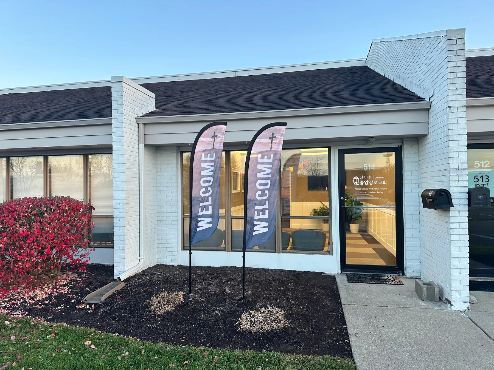

모임 안내 & 오시는 길Gatherings & Directions
모임 시간When we gather
주일 예배Sunday Service
1부 SUN 09:30 AM
2부 SUN 11:00 AM
2부 예배는 영어 동시통역이 제공됩니다.
Simultaneous translation in English at the 11:00 AM service.
어린이 예배Children's Service
주일 SUN 11:00 AM
2부 예배 찬양 이후 연령별 공과를 진행합니다.
청소년 예배Youth Service
주일 SUN 11:00 AM
2부 예배 참석 이후 12:20 PM에 모임을 가집니다.
주중 기도 모임Wednesday Prayer
수요일 WED 10:00 AM
사무실 · Office
도토리 축구교실Dotori Kids Football
금요일 FRI 4:30 PM
동시에 어머니들 소그룹 모임
Mothers' meeting simultaneously
도토리 한글교실Korean Language School
금요일 FRI 4:30 PM
현재 한국어로만 수업합니다.
Currently teaching Korean in Korean only.
온 가족 새벽기도Family Morning Prayer
매월 첫 번째 토요일 7:00 AM
First Saturday of every month
이후 아침식사 with breakfast
엇, 여기 교회가 있다고요?Huh? Is there really a church here?
네, 맞습니다! 😊 저희 교회는 창고 단지(Warehouse Complex) 한가운데, 조금은 의외의 장소에 있지만(!), 저희가 직접 리모델링한 소중한 공간이랍니다. 입구에서 "여기가 맞나?" 싶은 생각이 드셔도 걱정 마세요. 쭉 들어오시면 따뜻한 공간과 함께 그보다 더 따뜻한 사람들이 여러분을 반겨드립니다.
저희 교회는 Suite No. 514에 있습니다. 주일에 유난히 차량이 많이 모여 있는 곳이 보인다면, 바로 그곳이 맞습니다! 곧 뵐 수 있기를 기대합니다. 진심으로 환영합니다!
Yes, there is! Our church is located right in the middle of a warehouse complex — a bit of an unexpected place(!), but it's a space we've lovingly remodeled ourselves. If you find yourself wondering, "Am I in the right place?" at the entrance, don't worry. Just keep driving in — you'll soon see a warm and welcoming space, and even warmer people ready to greet you. We're in Suite No. 514. If you spot a section with an unusually large number of cars on a Sunday, that's probably us! We can't wait to meet you. You are truly welcome here!
궁금한 점이 있으신가요?Questions?
언제든지 cincykcpc@gmail.com 으로 연락 주세요.